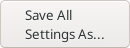

Key Note: The Settings program cannot be run when the Rosetta program is running.
Some changes made in the Rosetta Settings program are saved as soon as you make them, and others only when you save them. The buttons for saving and loading settings are at the bottom of the Axis Selection tab, and are also in the File menu at the top left corner of the window.
What is saved when
| Setting | When it is saved |
| Axis selection (which axis uses each plug), limit jacks, E-stop button, signal tower | Immediately, as soon as you change them |
| Backlash, jog speeds, measurement system, device names | Immediately, as soon as you change them |
| Scale, Max Vel, Max Accel, and PID values | When you click Save All Settings. If you close the Settings program with unsaved changes, it asks whether to Save and Close, Close Without Saving, or Cancel. |
All settings are kept in the file /home/reuben/Documents/RosettaSet_v1.ini, which Rosetta reads each time it starts.
The buttons
|
| Saves the Scale, Backlash, Max Vel, Max Accel, and PID values for every axis. Click this before closing the Settings program. |
|
 | Saves all your settings, then also saves a copy to a file you choose - for example, a dated backup before you re-tune the machine. |
|
| Saves just the axes you pick (each with its Scale, Backlash, and tuning values), and optionally the Measurement System, into a small file. You can label it with one of your Device Names - useful for sharing the calibration for one device, such as a curvilinear slide, with another Rosetta user. |
 | Loads settings from a file saved by either of the "Save ... As" buttons, and applies them. Click Save All Settings afterwards to keep them. |
The File menu
The File menu at the top left corner of the Rosetta Settings window has the same four commands as the buttons above, plus:
| Command | What it does |
| Back Up to USB... | Copies your settings files, gcode programs, HAL additions, tool table, and subroutines onto a USB flash drive. See Backing Up Key User Files to a USB Flash Drive. |
| Restore from USB... | Copies a backup from a USB flash drive back onto the Raspberry Pi, then closes Rosetta Settings. See Restoring Key User Files from a USB Flash Drive. |
| Quit | Closes Rosetta Settings. If you have unsaved changes, it asks first. |
Note: The keyboard shortcuts shown in the menu also work: Ctrl+S (Save All Settings), Shift+Ctrl+S (Save All Settings As), Ctrl+O (Load Settings from File), and Ctrl+Q (Quit).
Tip: once you have calibrated a device (see Scale Settings for a Device), use Save Subset of Settings As... to keep its values in a file named after the device. Then, whenever you put that device back on the machine, load its file.